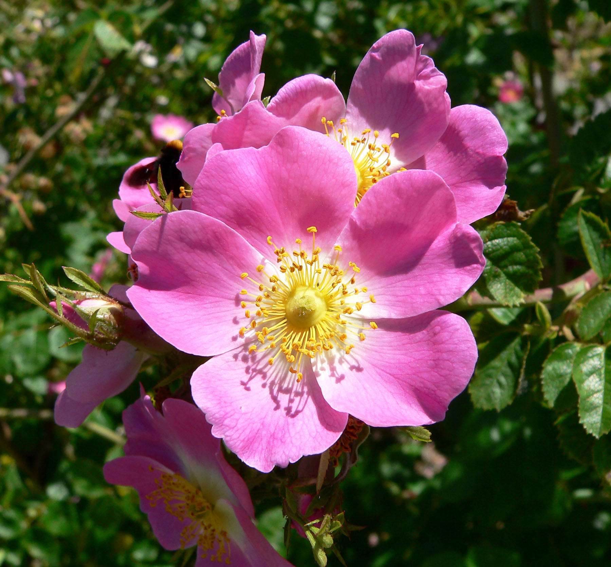

Rosa spp.
| common name | rose | |
| en español | rosa | |
| name in Āyurveda | śatapatrī (शतपत्री) | |
| name in TCM | yuè jì huā (月季花) | |
| plant family | Rosaceae (rose) | |
| parts used | fresh and dried petals, fruit (rosehips), and leaves |
 from Wikimedia Commons by Stan Shebs, CC BY-SA 3.0
observations/description
dried flowers
- beautiful red and pink petals, some wrapped in buds, some with calyx attached
- intense, intoxicating aroma: immediately shifts reality into some other plane/invites some other plane in
dried rosehips
- small desiccated chips, deep reddish brown color; looks a bit like dried guajillo chiles
- deep, caramely aroma
"Rose", Wikipedia
- long, pinnate leaves borne alternately on the stem, with a serrated margin, and often a few small prickles on the underside of the stem
- sharp growths along the stem, though commonly called 'thorns', are technically prickles (outgrowths of the epidermis), unlike true thorns (modified stems)
- flowers of most species have five petals, usually white or pink (though in a few species yellow or red)
- multiple superior ovaries that develop into achenes (rosehips)
distribution/conservation status
"Rose", Wikipedia
- most species are native to Asia, with smaller numbers native to Europe, North America, and Northwest Africa
- species, cultivars and hybrids are all widely grown for their beauty and often are fragrant
primary actions
notes from class, 11 Nov 2024
- astringent, nervine
The Yoga of Herbs, p. 141
- alterative, emmenagogue, refrigerant, nervine, carminative, laxative, astringent, eye tonic
Spritual Herbalism, p. 24
- antiviral, antidepressant, astringent, aphrodisiac, anti-inflammatory
The Modern Herbal Dispensatory, p. 295-6
- anti-inflammatory, antibacterial, antidepressant, astringent
The New Age Herbalist, p. 106
- nutritive tonic, mild laxative, astringent, tonic
system affinities
integumentary, nervous
primary uses
notes from class, 11 Nov 2024
- tone and tighten tissue (e.g., dry out a blister or help seal wound)
- shifts mood, brings joy, good for the heart; particular affinity for grief and PTSD
The Yoga of Herbs, p. 141
- relieves heat and congestion of the blood, soothes inflamed surfaces
- macerate in honey or raw sugar for sore throat, mouth sores, enlarged tonsils
- take with warm milk for mild laxative effect
- rose water: boil fresh petals and condense the steam into another vessel
- opens the mind and heart
- cooling and refreshing to the eyes, use for inflammation of eyes
- with śatāvarī for a tonic
- with safflower or hibiscus to regulate menstruation
- indicated for amenorrhea, dysmenorrhea, uterine hemorrhage
- helps with dizziness
Spiritual Herbalism, p. 24
- beneficial for colds, flu, and sore throat
- rosehips are nourishing and can help bring down a fever
The Modern Herbal Dispensatory, p. 295-6
- uplifting; reduces stress and helps heal heartache
- rosehips strengthen capillaries and are mildy astringent, helpful for acute illnesses like colds
The New Age Herbalist, p. 106
- rosehip tea, candy or syrup from the leaves/petals for nutrition (vitamin C)
- leaves are a mild laxative
- leaves and petals are astringent, useful for healing wounds
- seeds once used as a diuretic
- rosehips have a tonic effect
- aromatherapy
energetics
The Yoga of Herbs, p. 141
- balancing to all dośas
- may increase kapha or āma in excess
- bitter/pungent/astringent/sweet taste - sweet post-digestive effect
- cooling
The Modern Herbal Dispensatory, p. 295-6
- cooling, drying, slightly constricting
pharmacology
notes from class, 11 Nov 2024
- volatile oils
The Modern Herbal Dispensatory, p. 295-6
- rosehips are rich in bioflavonoids and vitamin C
The New Age Herbalist, p. 106
- vitamin C (up to 1.7%), vitamins B, E, and K, nicotinamide, organic acids, tannins, pectin
contraindications/pharmaceutical interactions/warnings
The Modern Herbal Dispensatory, p. 295-6
- no known contraindications
preparations
The Modern Herbal Dispensatory, p. 295-6
- weak infusion
- dried petals, 15 g: 1 L
- tincture
- dried petals, 1:5, 40% alcohol
- powder
Herbal Materia Medica, p. 32
- standard infusion
- dried flowers, 1:32
The Yoga of Herbs, p. 79, 141
- hot infusion
- fresh flowers, 1:4 (strong)
- fresh flowers, 1:8 (moderate)
- cold infusion
- fresh flowers, 1:4 (strong)
- fresh flowers, 1:8 (moderate)
- powder
- rose water
dosage
The Modern Herbal Dispensatory, p. 295-6
- tisane: 8 oz, 3/day
- tincture: 1-2 mL, 3/day
- powder: 1000-2000g, 3/day
Herbal Materia Medica, p. 32
- standard infusion: 2-4 oz
The Yoga of Herbs, p. 79, 141
- hot infusion: 2 oz, 3/day
- cold infusion: 2 oz, 3/day
- powder: 250-1000 mg, 3/day
extra information
The Yoga of Herbs, p. 141
- well known flower of love and devotion in bhakti and pūjā
personal experiences/simples
tisane (1 tsp: 8 oz, 10 minutes), dried petals
- delicate taste reminiscent of the aroma, which is still quite intense
- astringent taste, and sweet
- slight peppery taste, a bit like black pepper
- soothing; but not grounding, however
- unlike other relaxing nervines like lavender, lemon balm, chamomille: i feel almost less connected to my body/thoughts/emotions, allowing a feeling of fantasy to transport me from this embodiment
- more neptunian than venutian; perhaps venus in pisces
- powerful effect; i can see this being useful for acute cases of emotional distress where peace/respite is needed
- makes me feel creative; conducive for creating art perhaps not with any express purpose of processing something emotionally
- can create the space to then due the emotional processing work from a more content place
- but processing in dreamland comes with a risk - the risk of attaching to metaphor and symbolism, the risk of mistaking the feeling of peace for being peace
macerate (1 tbsp: 12 oz, 12 hours), dried petals
- long steep is very delicious; very aromatic with a delicate flavor
- very cooling, still astringent, but the astringency (as with the tisane) is very pleasant, possibly because it is only slightly bitter
- sweeter than the tisane, less peppery, almost lemony (lemon zest)
- seems more serious than the tisane
- feels more substantial; i am drinking it more slowly
- it feels grounding, not so fantastical/dreamy
- i can see here more the aphrodisiac potential - perhaps sexual, but more a desire for connection
- whereas the tisane immediately sent me to another plane of experience/shifted my experience to another plane, the macerate seems to be opening me to the experience of another plane than can be attained through the connection to the other
- more venus in cancer, or even scorpio
- body is very relaxed
glycerite (1:6, 66.7% glycerin, 3 weeks), dried petals
- deep reddish brown color, quite the color of dried rosehips
- just heaven, in aroma and flavor
- smells extremely fresh, intense smell of rose petals
- flavor is absolutely intoxicating with the sweetness of the glycerin
- tastes like confectionery, luxurious, exquisite
- i get the sense that i am tasting something that is too concentrated/too intense to be experienced in this form, not in a bad way; though this may indicate that it will do well diluted
- pleasant pepperiness reveals some bitterness and a luscious astringency throughout the mouth in the aftertaste
- extremely relaxing/placating/dreamy
decoction (8 g: 12 oz, 20 minutes), dried rosehips
- deep reddish brown color
- deep, earthy aroma; savory, a bit like chicken bouillon
- full palate: sweet body, high acidity, caramely, a bit savory/salty, almost chocolatey
- feels very nourishing
- for some reason i am thinking about mixing this with roasted dandelion root
tisane (1.5 tsp: 12 oz, 10 minutes), dried rosehips
- very similar to the decoction in color and flavor, but lighter
- highly reminiscent of hibiscus, but less floral
- a bit higher ratio of savory to sweet, but still a very full palate
- pleasant, complex spiciness in the aftertaste
witchcraft
Spiritual Herbalism, p. 24
- rose's thorns (read: prickles) protect its beauty: reminds us that blooming into our most radiant selves requires protection as a baseline
- calms the fire of an overused heart and allows us to hold energy for ourselves; from there, we can extend to loving others
- associated with Oshun: connects us to our sensuality and heart, vitality and joy
- planetary associations: venus
The Witch's Encyclopedia of Magical Plants, p. 265
- rose petals dusted with sugar considered an aphrodisiac
- petals, branches, and wreaths placed on graves
- dried rosehips used as a charm against enchantment and sorcery in the middle ages
- roses believed to be under the protection of elves and dwarves in Scandinavia
- rose galls, formed when a gall wasp lays eggs on a rose leaf bud, worn around the neck as an amulet and used for healing
- elements: water
- astrological influence: cancer, libra, sagittarius, taurus, venus
recipes
sources
Easely, Thomas and Steven Horne. The Modern Herbal Dispensatory (2016)
Frawley, David and Vasant Lad. The Yoga of Herbs: An Ayurvedic Guide to Herbal Medicine (1986)
Goldberg Blackthorn, Samantha and Shona MacDougall. Ace of Cups Herbal Medicine and Botanical Magic Herbal School (2024)
Kynes, Sandra. The Witch's Encyclopedia of Magical Plants (2024)
Mabey, Richard et al. The New Age Herbalist (1988)
Moore, Michael. Herbal Materia Medica, Fifth Edition (1995)
"Rose" on Wikipedia. Retrieved 6 May 2025.
Rose, Karen M. The Art & Practice of Spiritual Herbalism (2022)